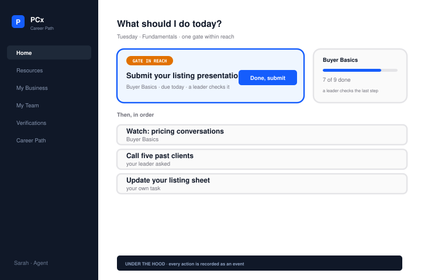

02 / PCx Career Path
Daily tasks and
career progression
An interactive frontend prototype for a real-estate career-path platform, produced as a paid assessment.
My role
I reviewed the requirements for career progression and daily work, then developed an AI-assisted frontend prototype of the proposed workflows.
Resolve conflicting requirements.
The brief used different stage names and completion rules in different places. It also treated “Productive Agent” as both a career stage and a production level. I documented those conflicts separately from the design proposals.
Explain task ranking.
The daily view puts urgency before priority. In the demo, an overdue medium-priority task appears ahead of high-priority work due today. “Why is this first?” explains the rule in place.
Three prototype views



Interface reconstructions from the original frontend prototype mock data
Delivery and limits.
I delivered the frontend prototype, proposed architecture and roadmap for discussion. The prototype uses mock data and has no backend. It was not launched as a production platform.
Open the original prototype External prototype Sample data